A focused story from sales volume to business decisions
Author
Student Analyst
Business analysis · R07 · 2021–2025
What sells most, when does demand rise, and which relationships deserve attention?
The story moves from the menu, to the timing of demand, and then to a few factors that may help explain differences. Each chart is included because it answers one of these questions.
Sales records
91,300
Daily item-level observations
Distinct menu items
50
Across eight categories
Highest-demand month
Jul
By average daily units
Strongest weekday
Saturday
By average daily units
Main takeaway: Drinks lead unit demand, while Burgers lead estimated total food-cost margin. Inventory priorities and menu-economics priorities are not the same.
Takeaway: Drinks lead recorded quantity, followed by Burgers, Sides, and Chicken. Volume helps prioritize availability, but it does not show which categories leave the most after food costs.
Which individual products stand out?
The category ranking can hide individual best sellers. This chart ranks the ten menu items with the highest total recorded quantity.
Show R code
p_top_items <-ggplot(data = top_items |>mutate(menu_item_name = forcats::fct_reorder(menu_item_name, total_quantity)),mapping =aes(x = menu_item_name, y = total_quantity, fill = category)) +geom_col(width =0.72) +geom_text(aes(label = scales::comma(total_quantity)), hjust =-0.12, size =3.7) +coord_flip(clip ="off") +scale_fill_manual(values = category_colors, name ="Category") +scale_y_continuous(labels =label_comma(), expand =expansion(mult =c(0, 0.18))) +labs(x =NULL, y ="Total recorded units") + theme_businessshow_chart(p_top_items)
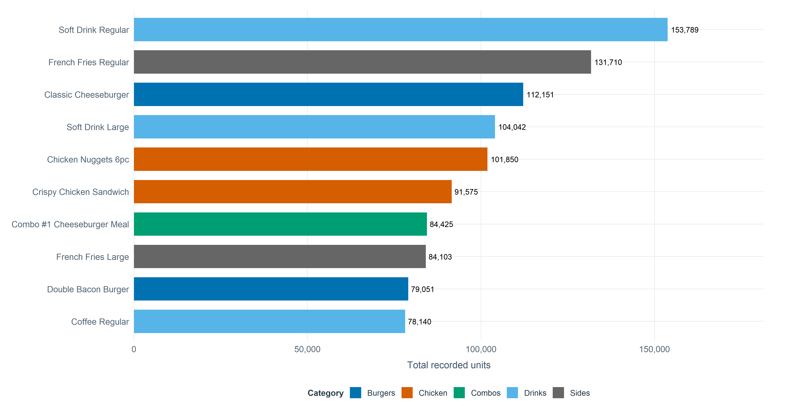
Takeaway: Soft Drink Regular, French Fries Regular, and Classic Cheeseburger lead individual-item demand. These products are sensible starting points for availability and replenishment checks during busy periods.
When does demand change?
Which months have the strongest average daily demand?
A line chart is appropriate for the ordered months. It shows the recurring seasonal rhythm without plotting every daily fluctuation.
Show R code
p_monthly_demand <-ggplot(month_summary, aes(x = month_label, y = average_daily_demand, group =1)) +geom_line(color = qsr_teal, linewidth =1.25) +geom_point(color = qsr_coral, size =3.4) +scale_y_continuous(labels =label_comma()) +labs(x ="Month", y ="Average daily recorded units") + theme_businessshow_chart(p_monthly_demand)
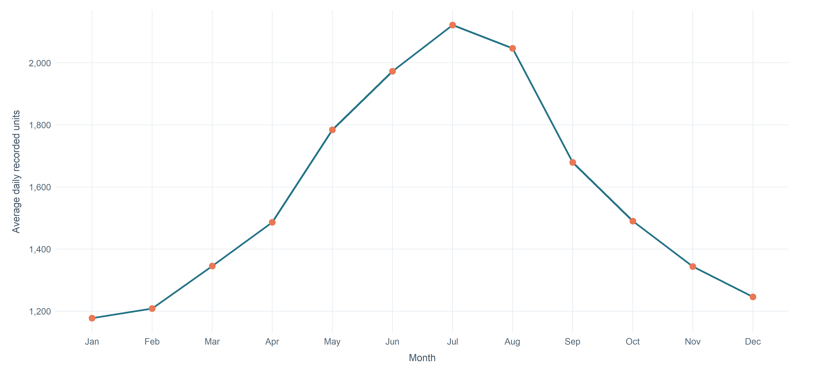
Takeaway: Demand peaks in Jul and is lowest in Jan. The recurring pattern can guide seasonal preparation and stock reviews, but it is not a guarantee for an individual day.
Do categories follow the same seasonal pattern?
The overall line hides category differences. Each panel below shows average daily category quantity by month, using the same month order and a separate vertical scale for readability.
Show R code
p_category_month <-ggplot(category_month, aes(x = month_label, y = average_daily_category_units, group =1)) +geom_line(color = qsr_teal, linewidth =1.0) +geom_point(color = qsr_coral, size =2.3) +facet_wrap(vars(category), scales ="free_y", ncol =4) +scale_y_continuous(labels =label_comma()) +labs(x ="Month", y ="Average daily category units",caption ="Panels use separate y-axes: compare each category's shape, not the height across panels.") + theme_business +theme(strip.text =element_text(face ="bold", size =12), axis.text.x =element_text(size =10.5), panel.spacing = grid::unit(1.1, "lines"))show_chart(p_category_month)
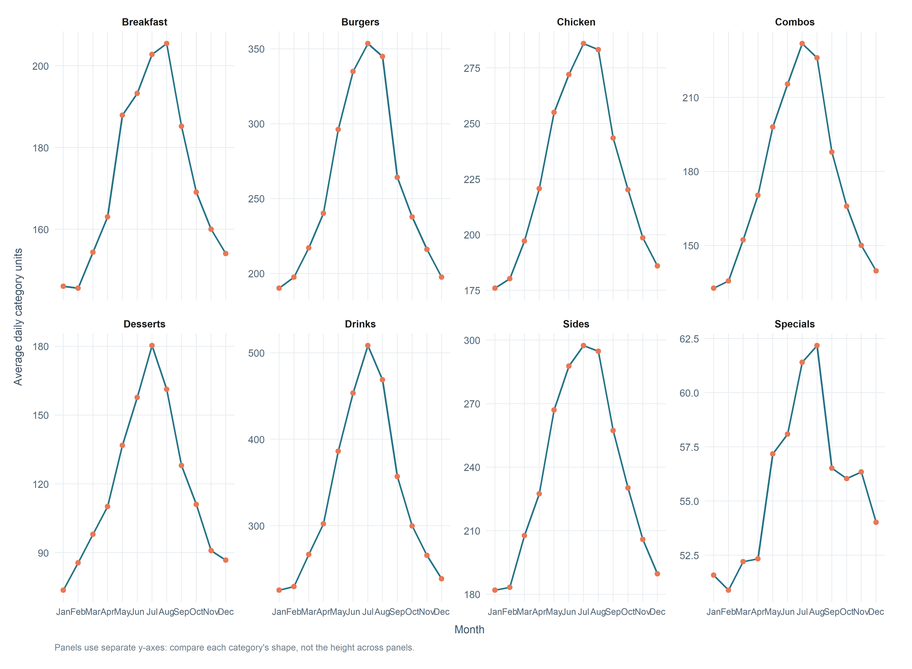
Takeaway: The small multiples show whether categories share the overall summer pattern or differ in timing. This helps avoid assuming that every product group needs the same seasonal plan.
Are the busiest weekdays consistently busy?
A boxplot compares the distribution of total daily units across weekdays. Unlike averages alone, it also shows the median, spread, and unusually high or low days.
Show R code
p_weekday_distribution <-ggplot(daily_context, aes(x = day_of_week, y = daily_demand)) +geom_boxplot(fill ="#CFE5E8", color = qsr_teal, outlier.alpha =0.45, linewidth =0.6) +scale_y_continuous(labels =label_comma()) +labs(x =NULL, y ="Daily recorded units") + theme_business +theme(panel.grid.major.x =element_blank())show_chart(p_weekday_distribution)
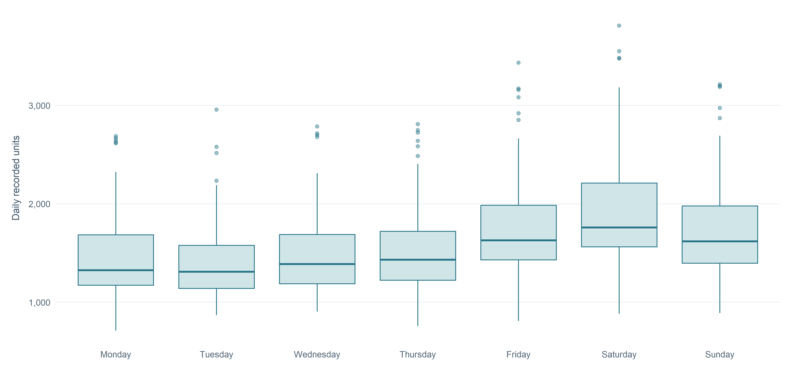
Takeaway: Use the full spread of past days, not only the average weekday, when discussing staffing and preparation. Weekend patterns are useful planning context, but busy and quiet days still vary within each weekday.
Do top products move together?
Which high-volume products share similar daily patterns?
A correlation heatmap compares daily quantities for the eight highest-volume items. It is a discovery tool: positive values indicate that two items tend to rise and fall together, while values near zero indicate little overall linear co-movement.
Show R code
p_product_correlation <-ggplot(product_cor_long, aes(x = item_x, y = item_y, fill = correlation)) +geom_tile(color ="white", linewidth =0.7) +geom_text(aes(label =number(correlation, accuracy =0.01)), size =3.8, color ="#203447") +scale_fill_gradient2(low ="#3C7DA4", mid ="#F6F8FA", high ="#D96D5B", midpoint =0,limits =c(-1, 1), name ="Pearson r") +scale_x_discrete(labels =function(x) stringr::str_wrap(x, width =18)) +scale_y_discrete(labels =function(x) stringr::str_wrap(x, width =18)) +labs(x =NULL, y =NULL,caption ="Based on matched daily observations. Shared weekends or seasonal changes can contribute to co-movement.") + theme_business +theme(axis.text.x =element_text(angle =35, hjust =1, size =10.5), axis.text.y =element_text(size =10.5),panel.grid =element_blank(), legend.position ="right", plot.margin =margin(12, 24, 24, 12))show_chart(p_product_correlation)
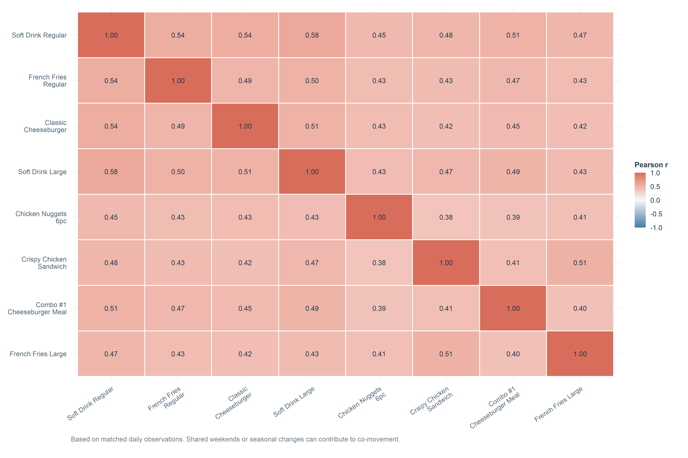
Takeaway: The heatmap helps identify product pairs worth a closer look. It measures similar daily patterns, not whether customers bought the products together on the same transaction.
Does the strongest product pair show a clear pattern?
The scatterplot follows up on the strongest absolute correlation in the heatmap. Each point is one day with recorded quantities for both products; the line summarizes their overall linear relationship.
The pair selected from the current data is Soft Drink Regular and Soft Drink Large (Pearson r = 0.58).
Show R code
p_product_pair <-ggplot(product_pair_data, aes(x = .data[[product_a]], y = .data[[product_b]])) +geom_point(color = qsr_teal, alpha =0.25, size =1.6) +geom_smooth(method ="lm", formula = y ~ x, se =TRUE, color = qsr_coral, linewidth =1) +scale_x_continuous(labels =label_comma()) +scale_y_continuous(labels =label_comma()) +labs(x =paste("Daily units:", product_a), y =paste("Daily units:", product_b),caption ="Association does not establish that one product causes demand for the other.") + theme_businessshow_chart(p_product_pair)
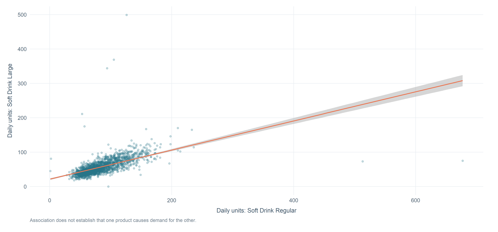
Takeaway: The points and smoothing line show whether the selected pair has a consistent pattern or substantial scatter. Treat this as a replenishment-planning clue, not evidence of customer-level product bundling.
Are promotions associated with higher demand?
Compare typical quantity and the full distribution
The summary compares mean and median quantity. The violin shapes with overlaid boxplots add information about spread and concentration within each category. Both views matter because promotional item-days are much less common than non-promotional observations.
Promotion and non-promotion summary
Item-day status
Average quantity
Median quantity
Item-days
Share of observations
No promotion
31.6
27
89,970
98.9%
Promotion
39.1
34
965
1.1%
Category median quantities and promoted sample sizes
Category
Median · no promotion
Median · promotion
Promoted item-days
Breakfast
21
27.0
159
Burgers
28
35.0
168
Chicken
34
60.0
111
Combos
33
38.0
69
Desserts
22
29.0
112
Drinks
34
42.0
165
Sides
22
27.0
125
Specials
19
23.5
56
Show R code
p_promotion_distribution <-ggplot(data = sales_menu_promo |>mutate(category =factor(category, levels =names(category_colors))),mapping =aes(x = promotion_status, y = quantity, fill = promotion_status)) +geom_violin(trim =TRUE, scale ="width", alpha =0.62, color =NA) +geom_boxplot(width =0.15, outlier.shape =NA, fill ="white", color ="#526575", linewidth =0.45) +facet_wrap(vars(category), scales ="free_y", ncol =4) +scale_fill_manual(values =c("No promotion"="#9AA8B3", "Promotion"= qsr_coral), name =NULL) +scale_y_sqrt(labels =label_comma()) +labs(x =NULL, y ="Quantity per item-day (square-root scale)",caption ="Tick labels remain in original units. Each category has its own y-axis; all observed quantities are retained.") + theme_business +theme(strip.text =element_text(face ="bold", size =12), axis.text.x =element_text(size =10.5),panel.spacing = grid::unit(1.2, "lines"), panel.grid.major.x =element_blank())show_chart(p_promotion_distribution)
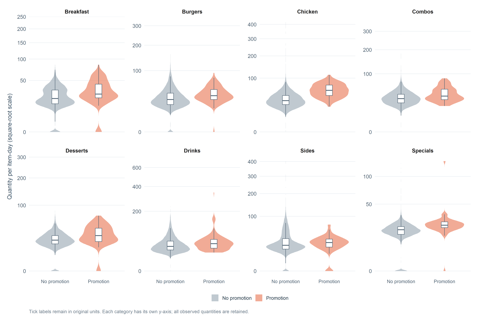
Takeaway: Promoted item-days have higher overall average and median quantities, but they account for only about 1.1% of observations. Differences vary across categories, and this descriptive comparison does not prove that promotions caused higher sales.
Does more demand mean more menu value?
Compare volume with estimated food-cost margin
The horizontal position shows average item-day demand by category, the vertical position shows average listed unit margin, and bubble size represents estimated total food-cost margin. This puts volume and simple economics in one view.
Show R code
p_category_economics <-ggplot(category_economics, aes(x = average_item_day_quantity, y = average_unit_margin, size = estimated_total_margin, color = category)) +geom_point(alpha =0.82) + ggrepel::geom_text_repel(aes(label = category), size =4, box.padding =0.45, point.padding =0.4,max.overlaps =Inf, show.legend =FALSE, seed =42) +scale_color_manual(values = category_colors, guide ="none") +scale_size_continuous(range =c(5, 18), labels =label_dollar(scale =1e-6, suffix ="M", accuracy =0.1),name ="Estimated total margin") +scale_x_continuous(labels =number_format(accuracy =1)) +scale_y_continuous(labels =label_dollar(accuracy =0.1)) +labs(x ="Average units per item-day", y ="Average listed margin per unit",caption ="Estimated margin = observed quantity × (listed price − listed food cost). This is not net profit.") + theme_business +theme(legend.position ="right")show_chart(p_category_economics)
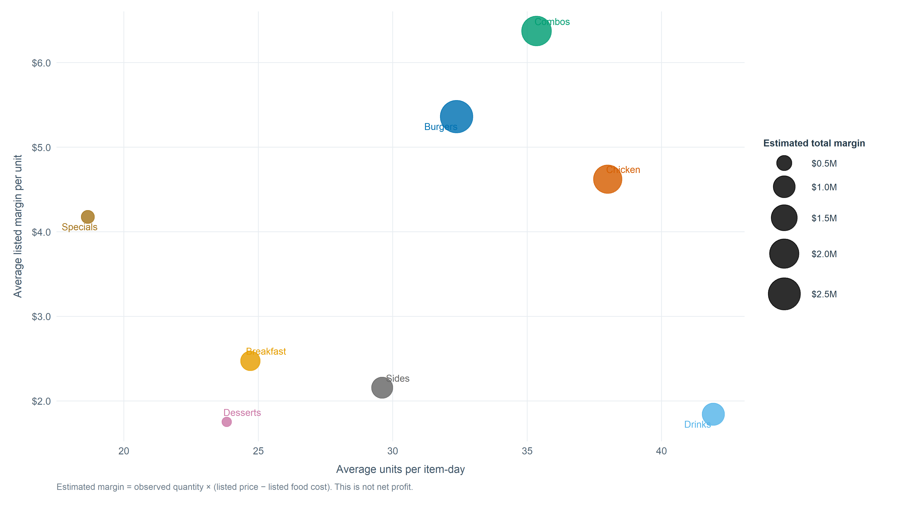
Category volume and estimated food-cost margin
Category
Total units
Average unit margin
Estimated food-cost margin
Menu items
Burgers
470,970
$5.36
$2,555,000
7
Combos
320,896
$6.37
$2,068,000
8
Chicken
414,210
$4.62
$1,850,000
6
Drinks
610,253
$1.84
$1,043,000
5
Sides
431,224
$2.16
$926,000
5
Breakfast
314,825
$2.47
$770,000
8
Specials
101,830
$4.18
$422,000
8
Desserts
216,535
$1.75
$369,000
3
Takeaway: Drinks lead quantity, but Burgers have the largest estimated total food-cost margin, followed by Combos and Chicken. Listed prices and costs are applied across all five years, and the estimate excludes labor, waste, rent, and other operating costs.
Can weather and local events add useful context?
Does the temperature-demand relationship remain within seasons?
The overall correlation is strong, but both temperature and demand vary through the year. Faceted scatterplots let us see whether the relationship looks similar within Winter, Spring, Summer, and Fall.
The overall Pearson correlation between daily demand and average temperature is 0.76. The panels below provide context for that overall value.
Show R code
p_temperature_season <-ggplot(data = daily_context |>filter(!is.na(avg_temp_f), !is.na(daily_demand)),mapping =aes(x = avg_temp_f, y = daily_demand)) +geom_point(color = qsr_teal, alpha =0.22, size =1.35) +geom_smooth(method ="lm", formula = y ~ x, se =FALSE, color = qsr_coral, linewidth =0.9) +facet_wrap(vars(season), ncol =2) +scale_x_continuous(labels =label_number(accuracy =1)) +scale_y_continuous(labels =label_comma()) +labs(x ="Average daily temperature (°F)", y ="Daily recorded units",caption ="Seasonal patterns may explain part of the overall association; the lines are descriptive, not causal.") + theme_business +theme(strip.text =element_text(face ="bold", size =13), panel.spacing = grid::unit(1.25, "lines"))show_chart(p_temperature_season)
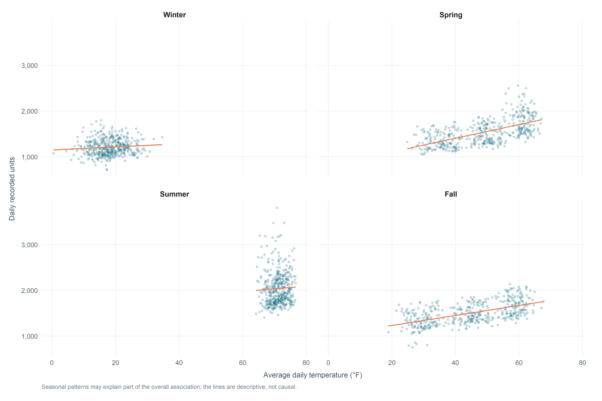
Simple within-season correlations
Season
Matched days
Temperature-demand correlation
Winter
437
0.09
Spring
443
0.60
Summer
439
0.04
Fall
438
0.57
Takeaway: Temperature is useful context for planning by season, but this analysis cannot separate its relationship with demand from other seasonal factors.
Which local events coincide with higher demand?
This comparison places each named event beside regular days. Values at the bar ends show average daily units and how many days contribute to each average.
Takeaway: Three named event groups exceed the regular-day average; Winter Carnival is slightly below it. Use the event calendar as a planning signal, not a promise that all events raise demand.
Which other relationships are worth a closer look?
Do listed price or preparation time show a clear relationship with average demand?
Each point is one menu item. The two scatterplots test whether average item-day quantity follows a clear linear pattern with listed price or preparation time. Points are colored by menu category, and the line summarizes the overall trend.
Show R code
p_price_demand <-ggplot(item_summary, aes(x = unit_price, y = average_item_day_quantity, color = category)) +geom_point(size =2.5, alpha =0.85) +geom_smooth(aes(group =1), method ="lm", formula = y ~ x, se =FALSE, color = qsr_coral, linewidth =0.9) +scale_color_manual(values = category_colors, name ="Category") +scale_x_continuous(labels =label_dollar(accuracy =1)) +labs(x ="Listed price per item", y ="Average units per item-day") + theme_businessshow_chart(p_price_demand)
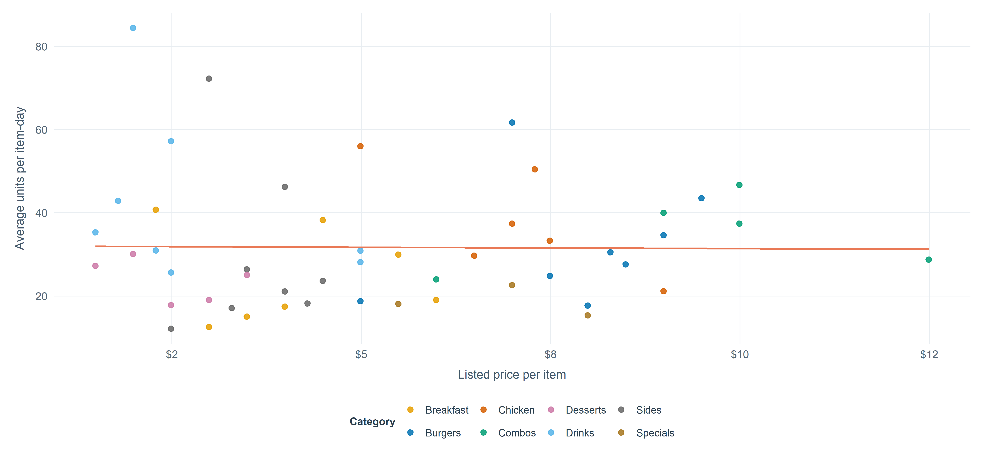
Does preparation time relate to average demand?
Each point is one menu item. The trend line helps check whether items that take longer to prepare also tend to have higher or lower average item-day demand.
Show R code
p_prep_demand <-ggplot(item_summary, aes(x = prep_minutes, y = average_item_day_quantity, color = category)) +geom_point(size =2.5, alpha =0.85) +geom_smooth(aes(group =1), method ="lm", formula = y ~ x, se =FALSE, color = qsr_coral, linewidth =0.9) +scale_color_manual(values = category_colors, name ="Category") +labs(x ="Preparation time (minutes)", y ="Average units per item-day") + theme_businessshow_chart(p_prep_demand)
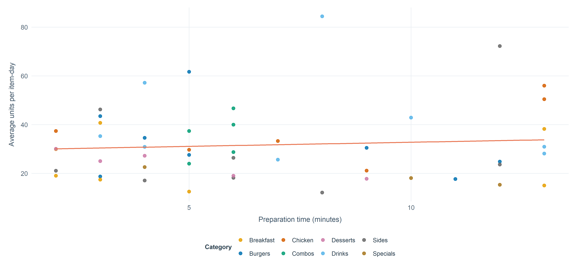
The linear correlations are -0.01 for listed price and 0.08 for preparation time.
Takeaway: These plots do not show a clear overall linear relationship between either listed price or preparation time and average item-day quantity across the 50 menu items. That is useful context, but it does not prove these factors never matter for a specific item.
Does monthly advertising spend move with demand?
The monthly scatterplot tests the relationship between local advertising spend and average daily demand. Colors distinguish years so we can see whether the pattern is spread across the five-year period.
Show R code
p_marketing_demand <-ggplot(data = monthly_marketing |>filter(!is.na(local_ad_spend_usd), !is.na(monthly_average_daily_demand)),mapping =aes(x = local_ad_spend_usd, y = monthly_average_daily_demand, color = year)) +geom_point(size =2.9, alpha =0.85) +geom_smooth(aes(group =1), method ="lm", formula = y ~ x, se =FALSE, color = qsr_coral, linewidth =1) +scale_x_continuous(labels =label_dollar(scale =1e-3, suffix ="k")) +scale_y_continuous(labels =label_comma()) +scale_color_brewer(palette ="Set2", name ="Year") +labs(x ="Monthly local advertising spend", y ="Average daily recorded units",caption =paste0("Monthly advertising-spend correlation = ", round(ad_spend_correlation, 2),". Seasonal demand and planned spending may explain part of this association.")) + theme_businessshow_chart(p_marketing_demand)
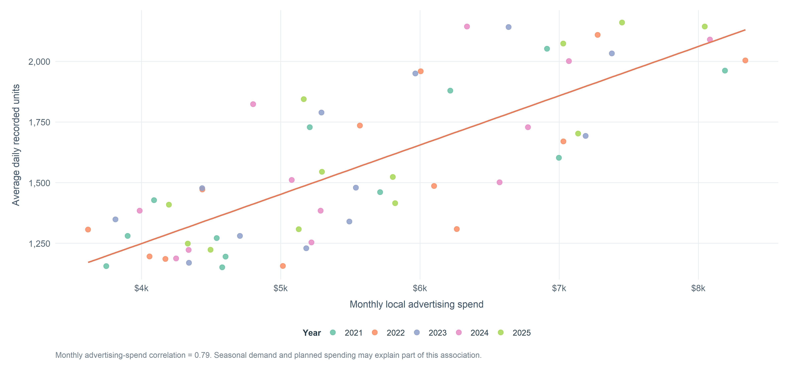
Takeaway: Advertising spend and demand move together in the raw monthly data, but this does not show that advertising caused higher demand. A planned test or a comparison that accounts for seasonality would be needed to estimate impact. Social-post count and precipitation have weak simple correlations with demand, so they are not given separate headline charts.
What should Dr. B do next?
The results point to a few practical next steps:
Protect core-product availability. Use the top-item ranking to prioritize stock checks, especially in the higher-demand months.
Plan for seasonal and weekly variation. Use the monthly trend and weekday distribution as a starting point for staffing and preparation.
Review the full menu economics. Consider estimated margin alongside volume, and use period-specific prices and costs before making financial decisions.
Evaluate promotions by category. Compare similar products and periods, and check whether the offer creates incremental demand before expanding it.
Prepare for specific local events. The event results differ by event, so use the calendar rather than a single general event assumption.
Treat weather and marketing as context. The current analysis identifies associations, not independent causal effects.
Note
Scope: This is a descriptive Stage 1 analysis of one selected restaurant. Estimates use the supplied prices and costs; they are not net profit or historical accounting. All conclusions should stay within the available R07 data and the visualization techniques covered in Weeks 1–5.
Final thought
The useful story is not simply what sold the most. Demand has a seasonal rhythm, products show different patterns, and high unit volume is not the same as high estimated food-cost margin. The best next decisions combine these findings and use new tests where the current data cannot establish a clear relationship.